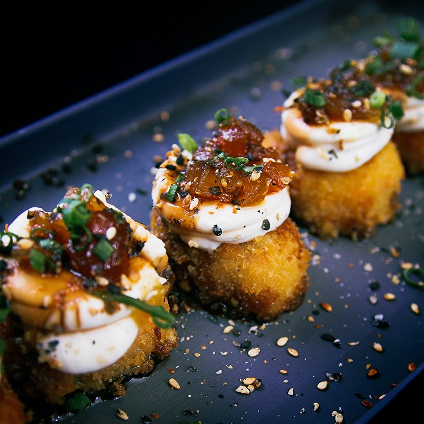
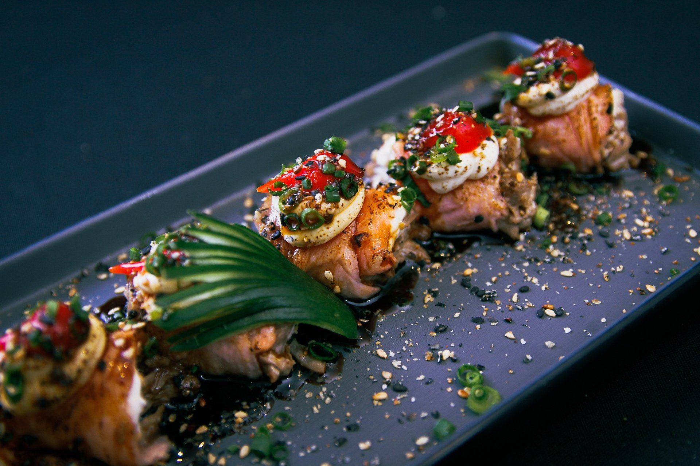
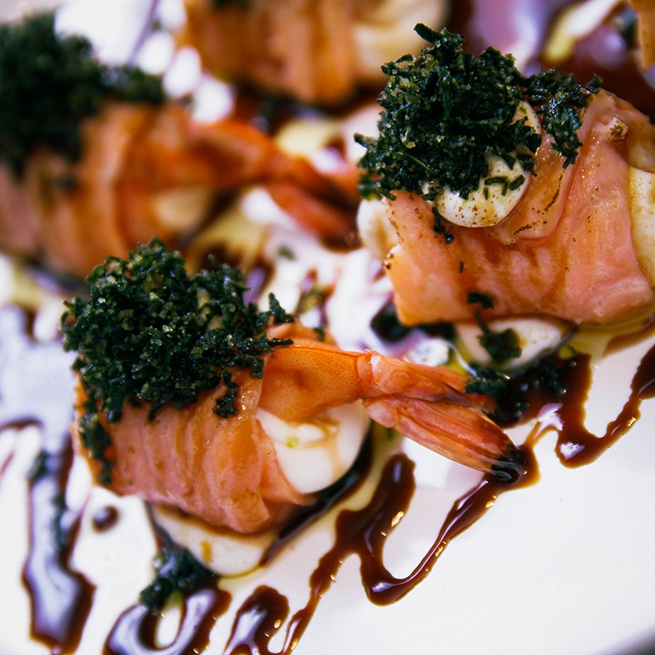
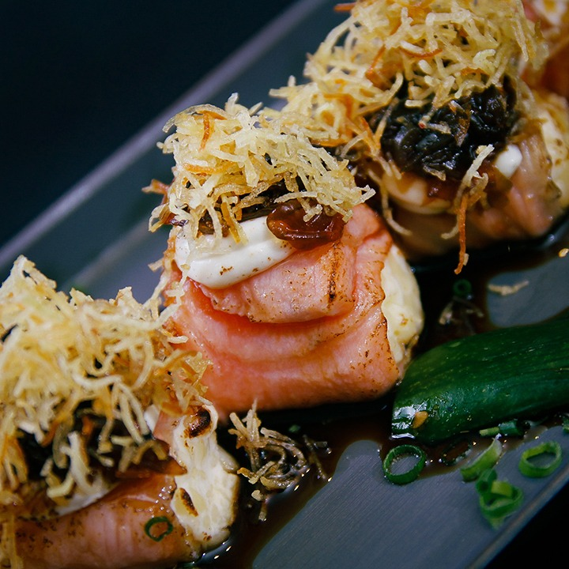
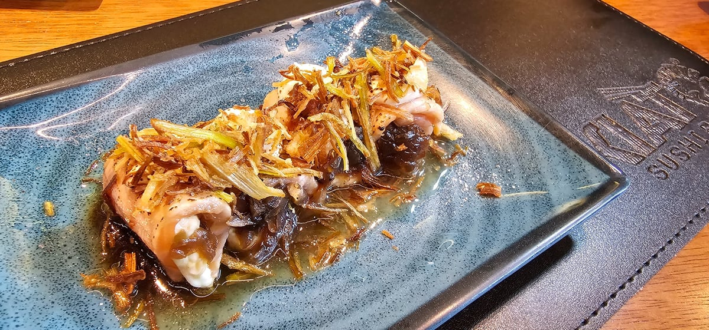
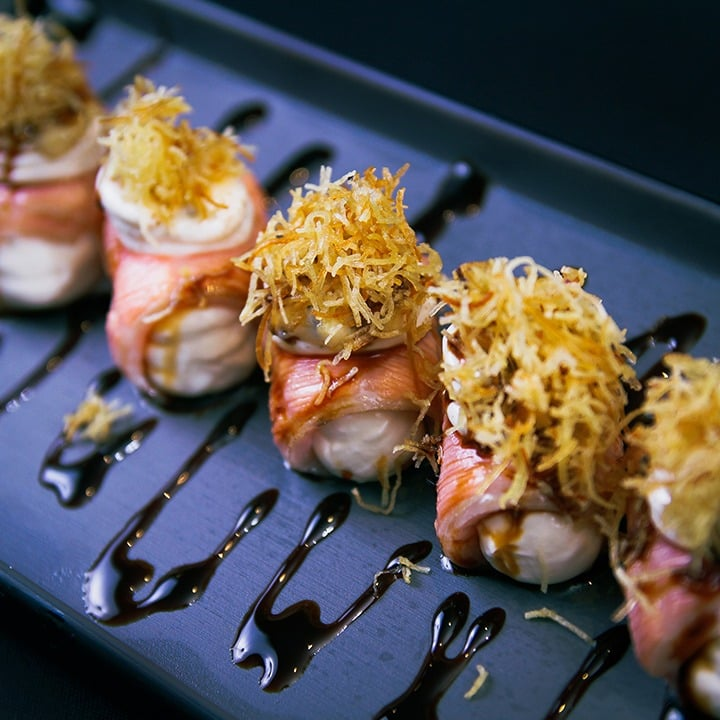
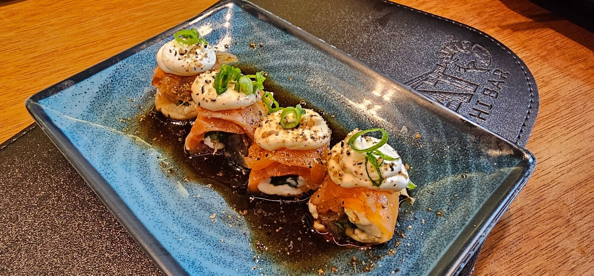
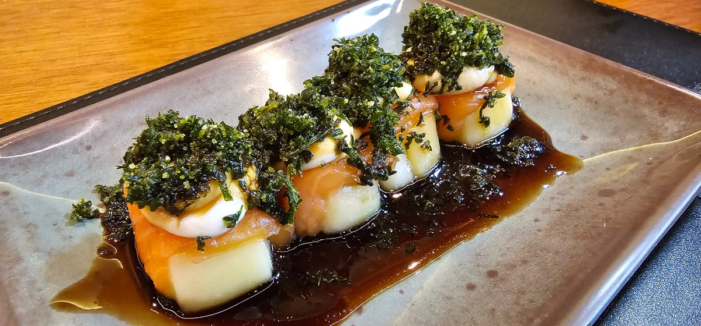
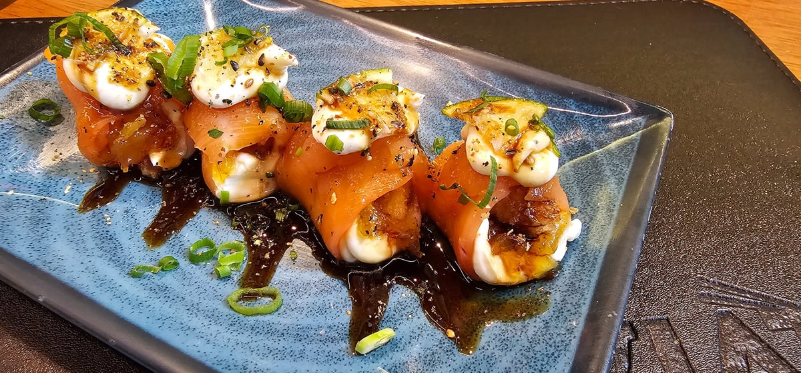

Gunkan Bacon
A intensidade do bacon encontra o sabor do salmão.
Salmão, recheios e texturas em combinações que surpreendem. Descubra seu próximo favorito.

Conheça oito combinações de sabores e texturas.

A intensidade do bacon encontra o sabor do salmão.

Camarão envolvido em salmão, com cream cheese e uma finalização crocante de couve.

Recheio de três queijos selecionados, envolvido em salmão.

Cream cheese no recheio, cebola caramelizada por cima e salmão flambado no molho do chef.

Salmão flambado e cream cheese com geleia de manga preparada pelo chef.

Rúcula fresca e gengibre dão personalidade ao salmão com cream cheese.

Salmão envolvendo um recheio de queijo selecionado.

Saint Peter empanado, salmão e cream cheese, finalizados com geleia.